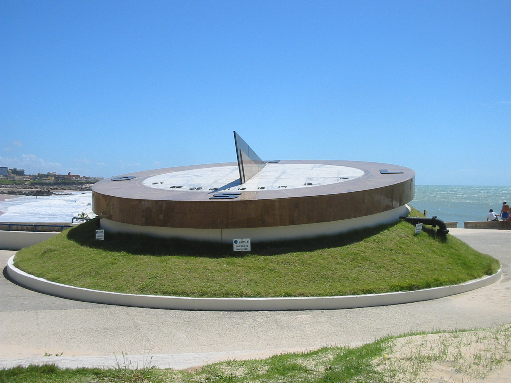
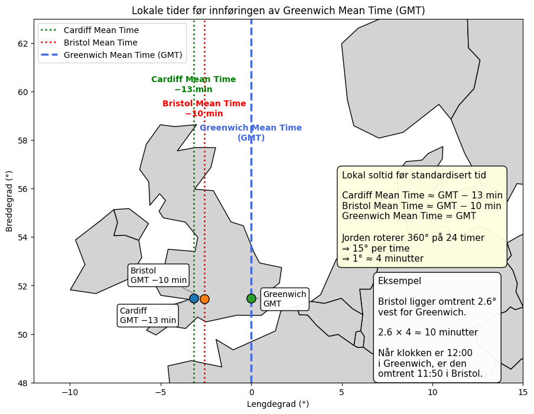
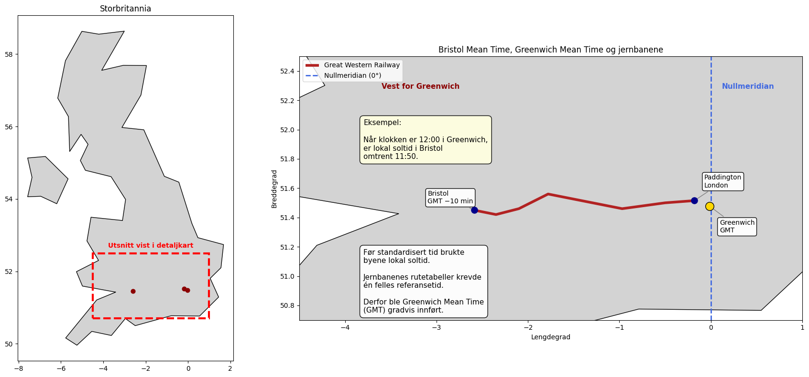

Tidsstruktur#
Pandas hjelper oss med å strukturere indeks der radetikettene består av datoer eller tidspunkter. Dette er organisert i en egen klasse som heter DateTimeIndex. Med datetimeindex kan vi gjøre seleksjon, gruppering og analyse av tidsseriedata mye enklere og raskere.
Under er et eksempel på de fem første linjene av en dataframe med DateTimeIndex.
df.head(5)
Production Consumption
Time(Local)
2026-01-01 00:00:00+01:00 18448,59 16662,95
2026-01-01 01:00:00+01:00 18693,66 14953,24
2026-01-01 02:00:00+01:00 18639,68 14298,07
2026-01-01 03:00:00+01:00 18502,66 13254,81
2026-01-01 04:00:00+01:00 18458,45 12678,51
Hva brukes det til?
lese inn data fra filer (CSV, Excel)
rydde og strukturere data
analysere tidsserier (som kraftforbruk)
gjøre beregninger og statistikk
Internasjonal standard#
For å blant annet kunne behandle geografiske tidsforskjeller benyttes Coordinated Universal Time (UTC), en felles referansetid som aldri forandrer seg
UTC brukes fordi:
ingen sommertid → ingen forvirring
gjør data sammenlignbare globalt
unngår feil i tidsserier
standard i API-er, databaser og analyse
Behov for tidsstandard#
Fram til midten av 1800-tallet hadde hver by sin tid definert av solen ved hjelp av et solur som i Areia Preta i Natal, Brasil som vist i fig-solur. Før standardiseringen hadde hver plass hadde sin middeltid (mean-time).

Fig. 12 width: 70% name: fig-solur#
Solur ved Areia Preta i Natal, Brasil. Foto: Patrick (2005), Wikimedia Commons, CC BY-SA 3.0.


Fig. 13 Setesdalsbanen ved Grovane.#
Kilde: Even Harbo, «Setesdalsbanen 2022.jpg», Wikimedia Commons, CC BY-SA 4.0.
Som vist i {numref}fig-bradshaw-1840, ble rutetabeller allerede i 1840 publisert for lange jernbanestrekninger som knyttet sammen byer med ulike lokale soltider. Dette bidro til innføringen av standardisert jernbanetid basert på Greenwich Mean Time (GMT).
{kind=link}
Fig. 14 Klokken på The Exchange i Bristol. Den ekstra minuttviseren viser Bristol Mean Time, som lå omtrent 11 minutter etter Greenwich Mean Time (GMT). Klokken illustrerer overgangsperioden da lokal soltid og standardisert jernbanetid eksisterte side om side. Foto: Rod Ward (2007), Public Domain, via Wikimedia Commons.#

Fig. 15 Great Western Railway-rutetable fra Bradshaw’s Railway Companion (1840). Tabellen viser avganger mellom London, Reading og andre stasjoner langs Great Western Railway, samt forbindelser mellom Bristol og Bath. På denne tiden gikk britiske jernbaneselskaper gradvis over fra lokale soltider til standardisert «London Time» (Greenwich Mean Time, GMT) for å unngå forvirring i rutetabellene. Kilde: Bradshaw (1840).#

I cellen under kaller vi på importerer vi datetime, timezone, fra datetme som er et begrep og en klasse i Python som brukes til å representere dato og tidspunkt
Den inneholder:
år: 2026
måned: 1
dag: 1
time: 13
minutt: 45
sekund: 00
from datetime import datetime
t = datetime(2026, 1, 1, 13, 45)
print(t)
2026-01-01 13:45:00
Vi oppdager fort at denne typen å representere tid på ikke vil fungere fordi den ikke tar høyde for tidssoner eller normaltid/sommertid.
Dette løses i timezone med å bruke utc:
from datetime import datetime, timezone
utc_now = datetime.now(timezone.utc)
print(utc_now)
2026-05-27 12:16:50.789300+00:00
Sted |
Tid |
|---|---|
UTC |
12:00 |
Norge (vinter) |
13:00 (UTC +1) |
Norge (sommer) |
14:00 (UTC +2) |
New York |
07:00 (UTC −5) |
import pandas as pd
df = pd.read_csv("../data/load_data.csv", sep=",")
print(df.head())
Time(Local) Production Consumption
0 01.01.2026 00:00:00 +01:00 18448,59 16662,95
1 01.01.2026 01:00:00 +01:00 18693,66 14953,24
2 01.01.2026 02:00:00 +01:00 18639,68 14298,07
3 01.01.2026 03:00:00 +01:00 18502,66 13254,81
4 01.01.2026 04:00:00 +01:00 18458,45 12678,51
print(df.columns)
Index(['Time(Local)', 'Production', 'Consumption'], dtype='object')
Hva er en tidsserie?#
I kraftsystemer jobber vi ofte med tidsserier: data som er målt over tid Eksempel:
last (MW)
produksjon
frekvens
Viktig: DatetimeIndex#
En vanlig index er bare “labels”. Men DatetimeIndex gir deg tidsforståelse innebygd, som betyr at du kan hente ut tid direkte.
df.index.hour
df.index.day
df.index.month
df.index.year
Dette er veldig nyttig når vi jobber med tidsserier
For å analysere tidsserier setter vi tid som indeks:
Selv med parse_dates, kan pandas feile hvis formatet er rart.
df = pd.read_csv("../data/load_data.csv", parse_dates=["Time(Local)"])
print(df["Time(Local)"].head())
print(type(df["Time(Local)"].iloc[0]))
0 01.01.2026 00:00:00 +01:00
1 01.01.2026 01:00:00 +01:00
2 01.01.2026 02:00:00 +01:00
3 01.01.2026 03:00:00 +01:00
4 01.01.2026 04:00:00 +01:00
Name: Time(Local), dtype: object
<class 'str'>
print(df.columns)
Index(['Time(Local)', 'Production', 'Consumption'], dtype='object')
df.columns = df.columns.str.strip()
df["Time(Local)"] = pd.to_datetime(
df["Time(Local)"],
dayfirst=True,
utc=True
)
df = df.set_index("Time(Local)")
df = df.sort_index()
df = df.tz_convert("Europe/Oslo")
print(df.columns)
Index(['Production', 'Consumption'], dtype='object')
print(df.head())
Production Consumption
Time(Local)
2026-01-01 00:00:00+01:00 18448,59 16662,95
2026-01-01 01:00:00+01:00 18693,66 14953,24
2026-01-01 02:00:00+01:00 18639,68 14298,07
2026-01-01 03:00:00+01:00 18502,66 13254,81
2026-01-01 04:00:00+01:00 18458,45 12678,51
Første linje i dataene 18448,59 er norsk format: , = desimaltegn
pandas har lest det som tekst
FIX (konverter til tall)#
df["Consumption"] = df["Consumption"].str.replace(",", ".").astype(float)
print(df.dtypes)
Production object
Consumption float64
dtype: object
Da kan vi gjøre:
analyse = df['Consumption'].resample("1D").mean()
print(analyse.head())
Time(Local)
2026-01-01 00:00:00+01:00 15464.587083
2026-01-02 00:00:00+01:00 19360.323333
2026-01-03 00:00:00+01:00 23015.297083
2026-01-04 00:00:00+01:00 23660.607500
2026-01-05 00:00:00+01:00 25149.064167
Freq: D, Name: Consumption, dtype: float64
Motivasjon#
Hvorfor dette er viktig i dette kurset I dette kurset bruker vi pandas til å:
lese ekte kraftsystemdata
analysere lastprofiler
finne mønstre i forbruk
koble data til dynamiske modeller
Kobling videre#
Når dataene er klare, kan vi:
Lage en representativ døgnprofil glatte data (Gaussian-filter) analysere dynamikk (swing equation)